Decipherment
Day 17: The History of the Alphabet
Review of Hieroglyphs
Review: how do Egyptian hieroglyphs work?
- Linear Orientation
- Ablaut
- Character Types:
- Logograms
- Phonograms
- Determinatives / Semantic Complements
- Phonetic Complements
Activity
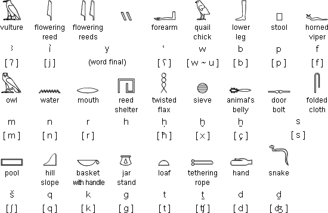
Activity
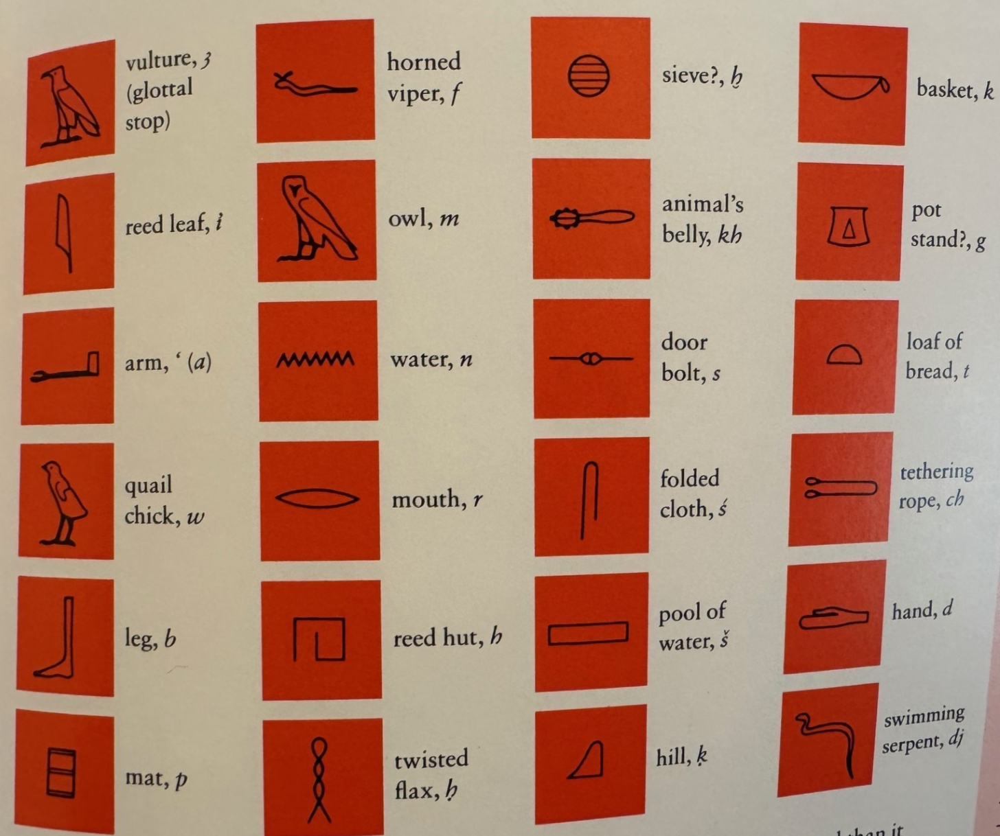
Activity
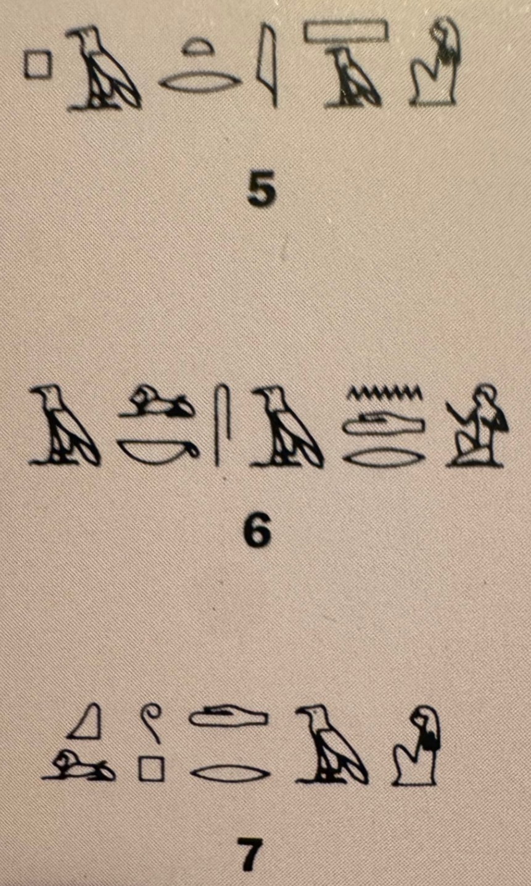
Review: Egyptian for Dummies
Review from Last Time
What is meant by “Egyptian from Dummies”?
How did the Proto-Canaanites use acrophony to create new symbols?
What type of script was it?
Acrophony
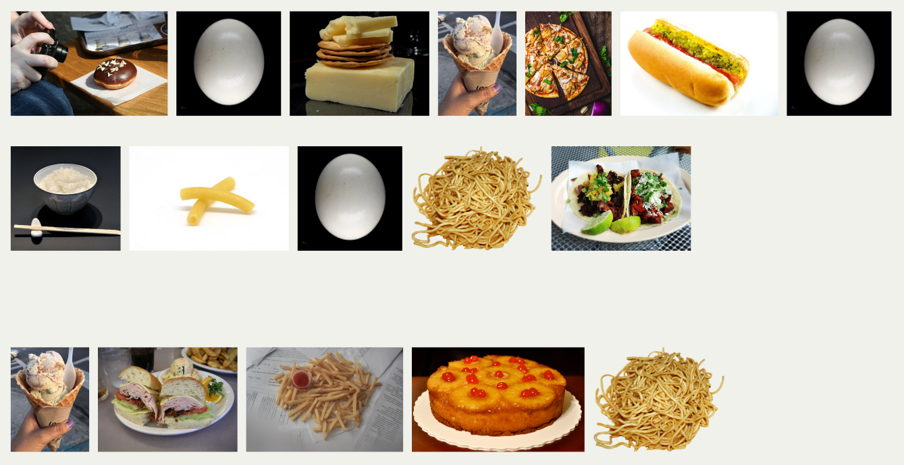
Following the principles of acrophony, what does this say?
Acrophony in Proto-Canaanite
The symbols and the acrophonic principle were borrowed from Egyptian – the sound values of the graphemes were not!
< pr > → < b >, Semitic bēt ‘house’
< n > → < m >, Semitic mem ‘water’
< ɟ > → < n >, Semitic nahas ‘snake’
< r > → < ʕ > , Semitic ʕayin ’eye
From Egyptian to Semitic
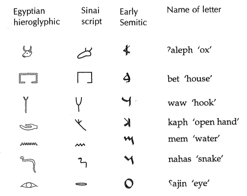
Phoenician inscription of Aḥiram
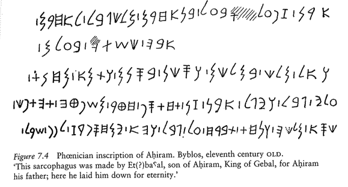
Overview of Progression
- Tokens →
- Cuneiform →
- Egyptian Hieroglyphs →
- Proto-Semitic Abjad →
- Phoenician → …
- English Alphabet
Creating an Alphabet
The History of the Alphabet
Today:
How did the Phoenician abjad become an alphabet?
How did the alphabet end up in the hands of the Romans?
How did it end up representing the English language?
Origins of the Greek Alphabet
- The Semitic abjad very likely brought to Greece by Phoenician traders
- It’s the first application of the Semitic consonantal alphabet to a non-Semitic language.
Phoenician Abjad → Greek Alphabet
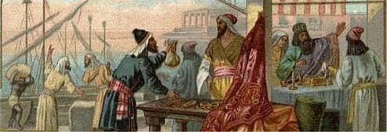
Phoenician Traders
Greek Alphabet < Phoenician Abjad
- They look extremely similar.
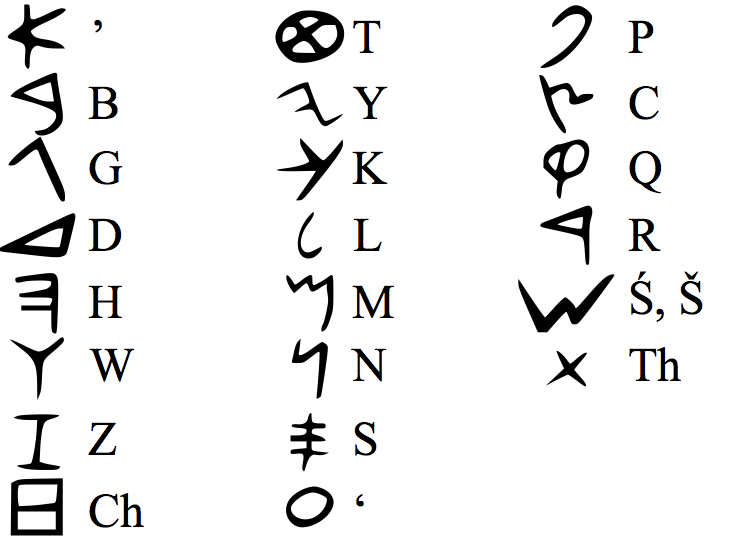
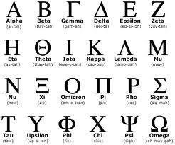
Letters Rotate All the Time! Remember…
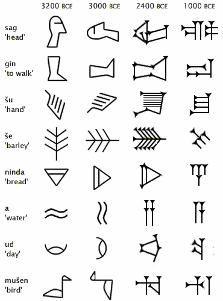
Rotating Characters
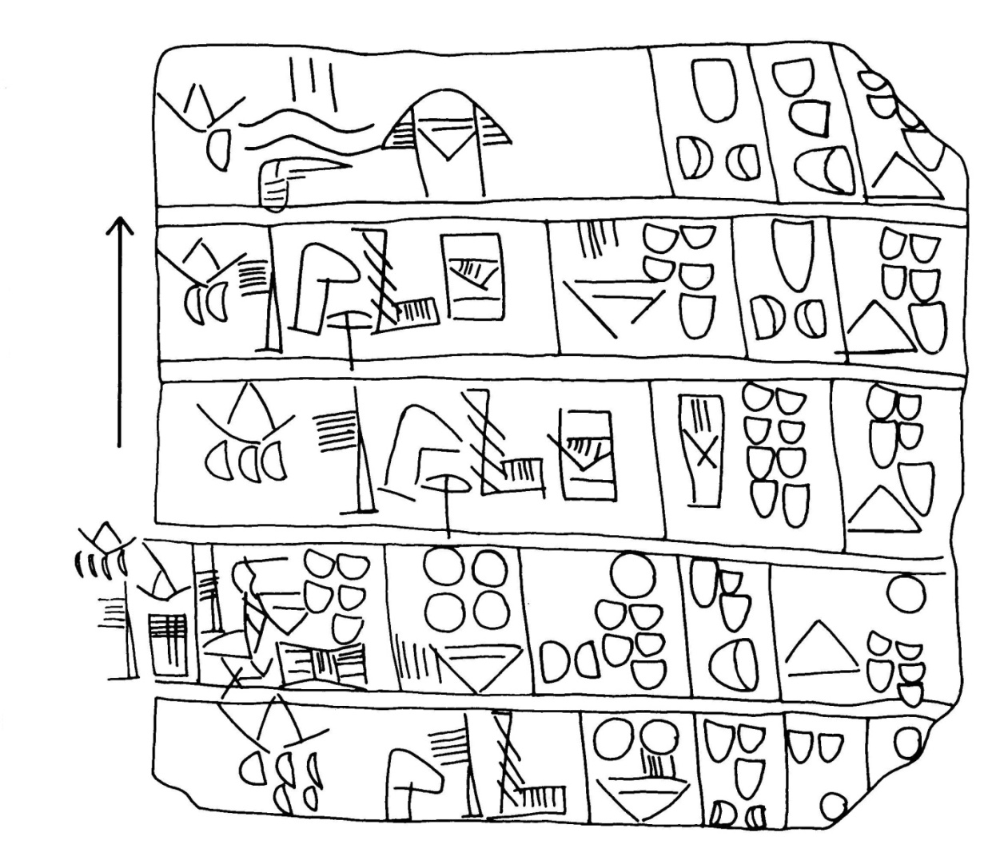
Greek Alphabet < Phoenician Abjad
- The order of the letters is pretty much the same.
Where did this order originate?
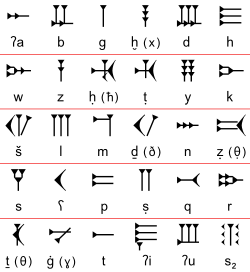
Ugaritic, ca. 1300 BCE
Greek Alphabet < Phoenician Abjad
- The letter names are basically the same.
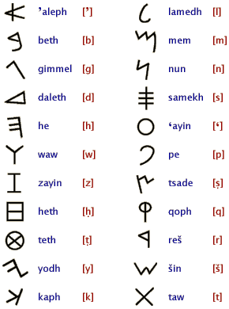
Greek Alphabet < Phoenician Abjad
- Names actually mean something in Semitic, but nothing in Greek:
- ’aliph = ox
- bēt = house
- gimel = camel
- waw = crook
Greek Alphabet < Phoenician Abjad
- The Greeks called their alphabet:
- φοινικεῖα γράμματα ‘Phoenician letters’
- [phojnikeja grammata]
- καδμεῖα γράμματα ‘Cadmean letters’
- [kadmeja grammata]
- Cadmus = legendary creator of alphabet who just happened to be Phoenician
- φοινικεῖα γράμματα ‘Phoenician letters’
Problems
- The date of borrowing of the Greek alphabet is quite problematic:
- although the earliest Greek text dates to the 8th c. bce, the earliest form of Greek writing most resembles Phoenician writing from the 11th c. bce
- Shapes of Letters & Boustrophedon = 11th c. Phoenician
Why the gap?
- We can always say that the early Greeks wrote on “perishable materials”
- Good argument?
- Scholars keep on digging for those older texts.
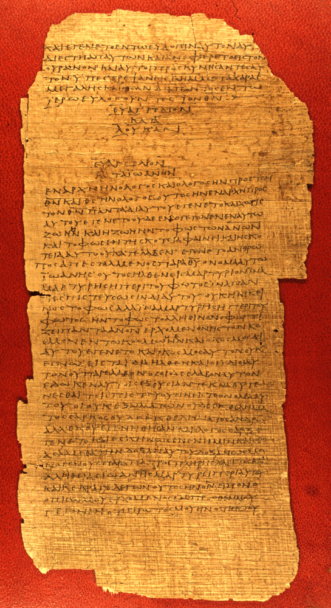
Biggest difference between Phoenician and Greek?
How did an abjad become an alphabet?
Identify at least three differences between the two languages’ sound systems
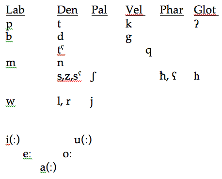
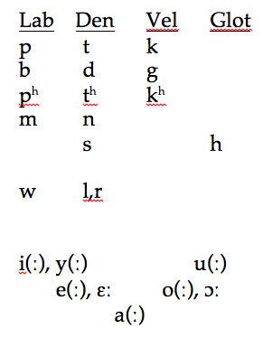
Furthermore… Semitic has Ablaut!
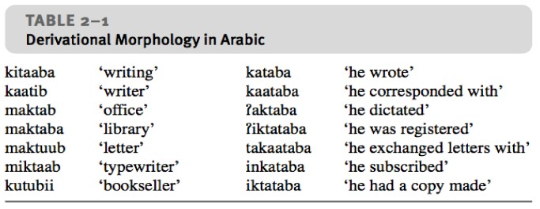
Ablaut in Greek?
But how would the following Greek words be written in an abjad?
ἐάω [eáoː] ‘I allow’
ἀάατος [aáatos] ‘immune to disaster, delusion’ (?)
Creating an Alphabet
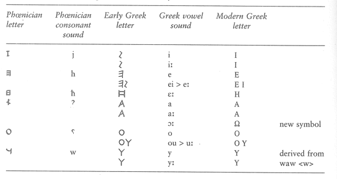
Creating an Alphabet
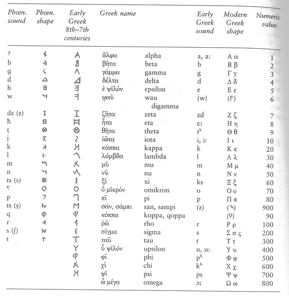
Early example: Nestor’s Cup
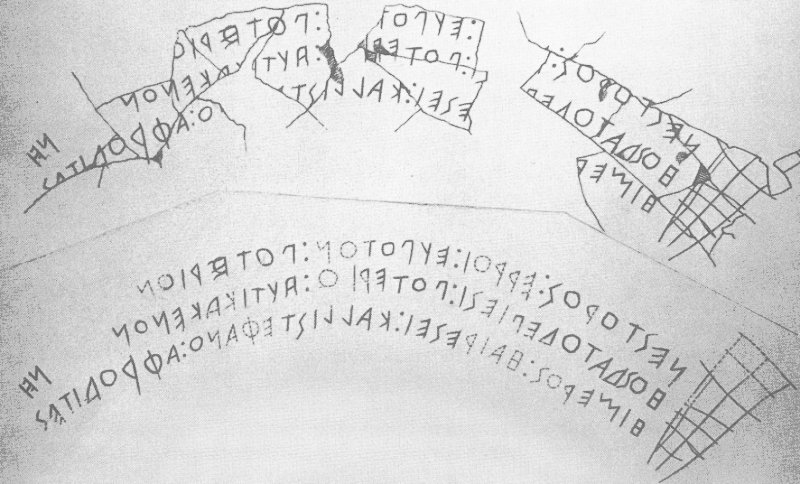
Nestor’s Cup
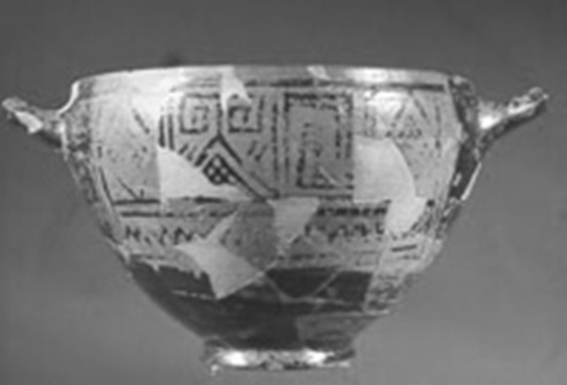
“(I am) Nestor’s cup, (and I’m) good to drink from. Whoever downs this cup will immediately be seized by the desire for the fair-headed Aphrodite.”
Linear Orientation?
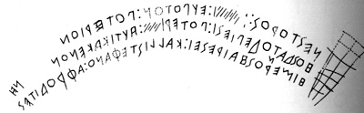
- ΝΕΣΤΟΡΟΣ: ΕΡΡΟΙ : ΕΥΠΟΤΟΝ : ΠΟΤΕΡΙΟΝ
- ΗΟΣ ΔΑ ΤΟΔΕ ΠΙΕΣΙ : ΠΟΤΕΡΙO. : AΥΤΙΚΑ ΚΕΝΟΝ
- ΗΙΜΕΡΟΣ : ΗΑΙΡΕΣΕΙ : ΚΑΛΛΙΣΤΕΦΑΝΟ : ΑΦΡΟΔΙΤΕΣ
It’s Greek to You
The following are names of famous Greek people, gods, and places.
Consulting this site try to decipher these names. The first has been done for you. What do you think ‘,’ mean?
- Πλάτων Plato
- Περικλῆς
- Σπάρτα
- Ὅμηρος
- Σαπφώ
- Ἀθῆναι
- Ζεύς
Synopsis
- Tokens →
- Cuneiform →
- Egyptian Hieroglyphs →
- Proto-Semitic Abjad →
- Phoenician →
- Ancient Greek Alphabet → …
- English Alphabet
From Greeks to the Romans?
From the Greeks to the Romans?
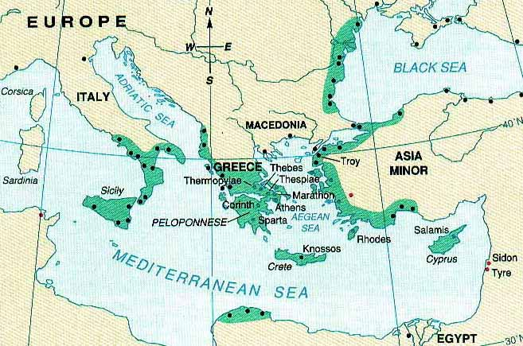
Greek Colonies, ca. 500 bce
No, the Etruscans!
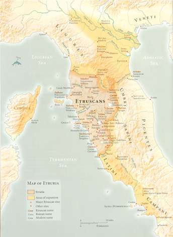
The who?
Spoken in Central Italy in the 1st millenium bce Linguistic Isolate
We can “read” it, but we can’t really read it.
- We’ll talk more about them after the second exam.
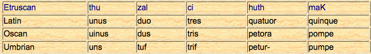
Tuscany = “Etruscany”

From Greece to Italy
- Greece had many colonies in the Mediterranean, some of which were in Italy
- It’s through this contact that the alphabet came from Greece to Italy during the 7th c. bce
From Greece to Italy
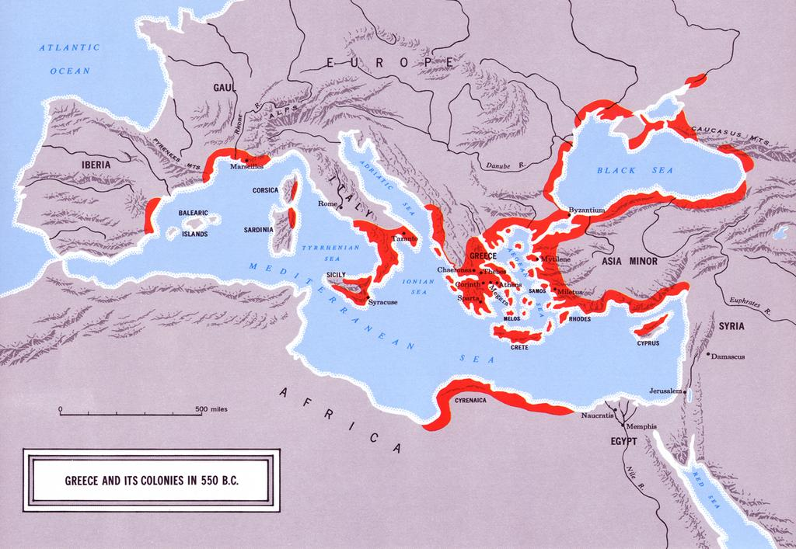
From Greece to Italy
- The Romans, who spoke the Italic language Latin, were living in and around the city of Rome at this time
- Their neighbors to the north were the Etruscans, who first borrowed the alphabet from the Greeks and made their own distinct mark on what was later to be known as the Roman alphabet
There were multiple Greek dialects
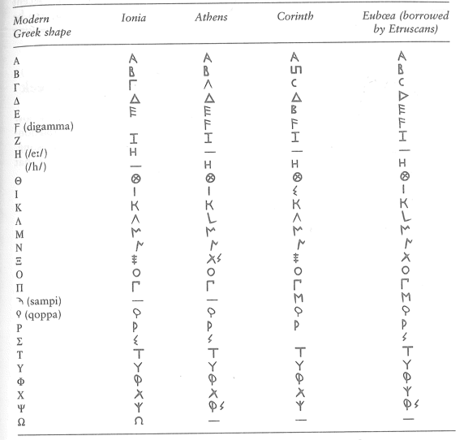
How does the Euboean script look more like our own?
From Euboea to Etruria
- The Etruscans borrowed their script from the Western Greeks (likely the Cumaeans who lived around modern-day Naples), who they traded with
Greek Colonies, ca. 500 bce
Greek vs. Etruscan phonemic inventories
Etruscan didn’t have:
- Voiced stops: < Β, Γ, Δ >
- Aspirated stops < Φ, Χ, Θ >
- The vowel /o/ < Ο >
- The glide /w/ < F >, which becomes a labiodental fricative (/f/), written as < FH >
Activity: Changes within Etruscan
The Etruscans lacked voiced stops, so <Β, Δ, Γ> were not pronounced /b, d, g/ as in Greek.
Instead, voicing was not a contrastive feature for stops in Etruscan.
With a partner:
Using an IPA chart, discuss what sounds the Etruscans likely used for <Β, Δ, Γ>. What happens if you make [b], [d], and [g] voiceless?
Etruscan Alphabet
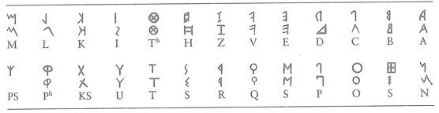
Even though they didn’t need them, the Etruscans borrowed the entire alphabet from the Greeks. Note that the alphabetical order is preserved faithfully in this abecedary.
Curious Feature of Etruscan - How Many /k/ Sounds?

K Party
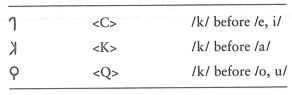
And then what?
The Romans!
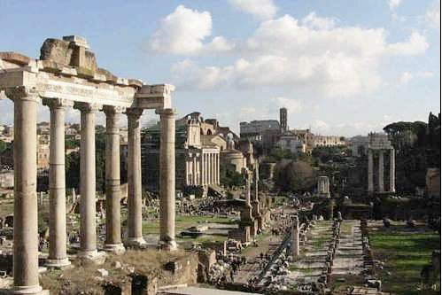
The Romans
It is from the Etruscans that the Romans inherited their script, which we know as the “Roman alphabet”
What language did the Romans speak?
Politically, culturally and militarily the Romans were extremely successful, having conquered most of Europe, much of the Middle East and North Africa
Latin
- As the Romans conquered they spread both the Latin language and the Roman alphabet, which is why both are so widely found throughout the Western world
- All of the Romance languages were once Latin dialects, having diverged through time as they were separated by both geography and politics
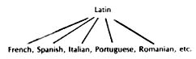
K…
As I mentioned before, the northern Etruscans made an orthographic contrast of Γ K Ϙ.
- What was the distribution?
K…
- The Romans maintained that contrast in the beginning:
- C (from Γ ) began to be used for pretty much all /k/: cervus ‘stag’
- K was used to only a few words: kalendae ‘calends’
- Q was used to write the sound /kw/ if followed by a u: quaero ‘I seek’
K…
- But after a while they abandoned the letter < K > except in Greek words
Activity: K…
Let’s insert a C or Q letter to indicate /k/ in the following Latin words using the old spelling :
- __ ensus ‘registration, wealth, estate valuation’
- __ orona ‘crown, garland, halo’
- __ aesar ‘famous last name’
- __ uattuor ‘four’
- __ ingo ‘I enclose’
Why < Q > + < u > ?
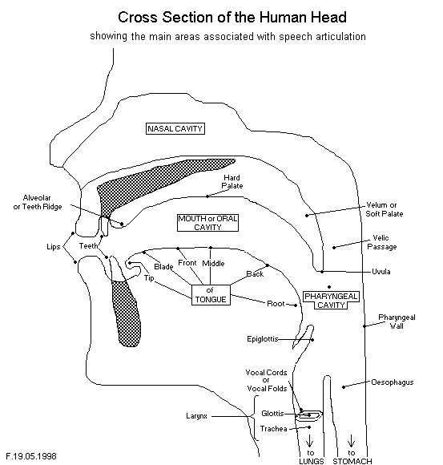
Why < Q > + < u > ?
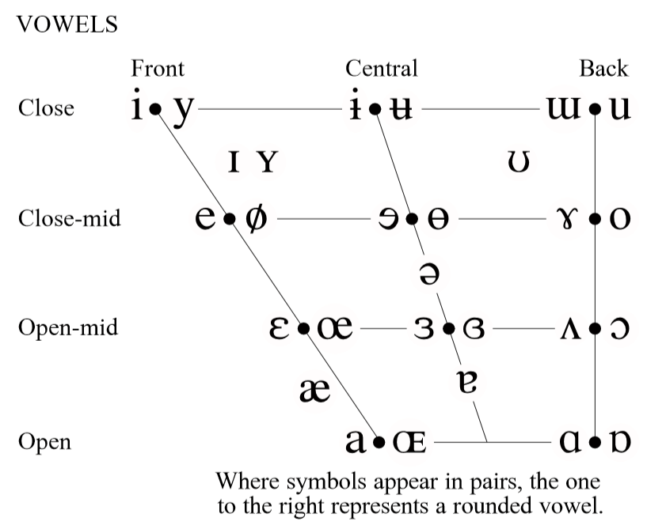
Why < Q > + < u > ?
Roman
Unlike Etruscan, Latin had a distinction in voiceless and voiced stops! At first they didn’t care:
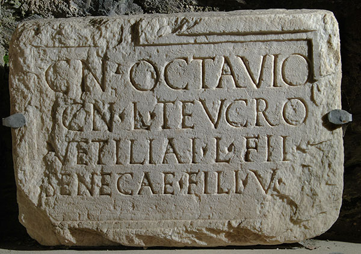
Cn(aeo) Octavio Cn(aei) l(iberto) Teucro
Gnaeo Octavio Gnaei liberto Teucro
But After a While…
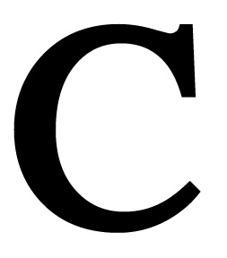
→
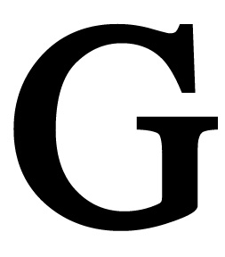
Useless Letters were purged

But they loved them /k/ letters!
Other modifications
Ζ had been gotten rid of for a while, too, but was brought back into the alphabet with a later influx of Greek words
That’s why it’s at the end of the alphabet and not towards the beginning like in Greek & Etruscan
While the basic order of the alphabet remained intact, the names of the letters were modified in Latin, with alpha, beta, gamma, delta, being replaced by ā, bē, kē, dē, etc.
- This is why we sing a, b, c and not alpha, beta, gamma
Roman Alphabet

From Rome to England

Roman Empire (43 BCE)
History of the Alphabet
- Tokens →
- Cuneiform →
- Egyptian Hieroglyphs →
- Proto-Semitic Abjad →
- Phoenician →
- (Euboean) Greek →
- Etruscan →
- Roman →
- English Alphabet